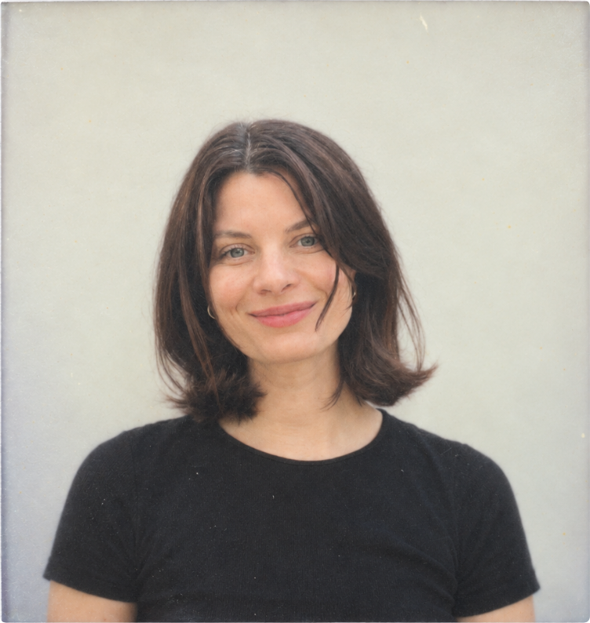

BIOGRAPHY
I’m a researcher, designer and visualiser. I have always made things, and that is what led me to study Product Design. There I learned to bring my ideas to life.
A minor in the art of reproduction showed me what it costs, and how much work it takes, to make products at scale. I then spent six months in Zanzibar helping set up a workshop where local women make products from local waste. My internship and graduation project at TomTom came next. I designed a small alarm device for women, as part of their push to design for women.
After graduating in 2015, I went back to modelling, which I have done since I was 18. When Covid stopped me from travelling, I moved into urban development. I worked on research, design and consultancy. I started in mobility and moved into policy, environment and energy.
That made me want to go deeper. I did a master’s in Metropolitan Analysis, Design and Engineering at TU Delft and Wageningen University and Research. It covers the city through climate, energy, water, justice, policy, technology, AI and data, ethics and ecology. I learned to code and build websites. I also learned a lot of qualitative research, and I ran participatory design sessions with the people involved. My thesis looked at collaboration in urban densification, on the governance side. I wanted to understand how to keep it human.
Visualisation ties my research and design together. I turn complex information, relationships and ideas into visuals that people can understand, discuss and explore.
Now I’m ready for my next step, and that step is London. I’m half British, and I thought: why not try another city? A big one. I want to put my knowledge to work in urban design or product design. I’m also open to research in climate, people, education or anything else that is meaningful. People, the environment, the future and justice are what I care about most.
EDUCATION
EXPERIENCE
Independent Researcher & Designer
Nov 2024 to present
Junior Consultant & Designer, Advier BV
Apr 2020 to Aug 2021
Fashion Model
2009 to present
Represented by agencies worldwide